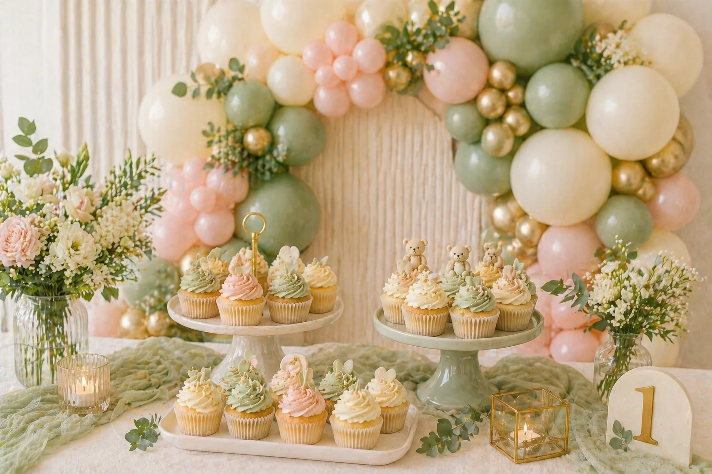
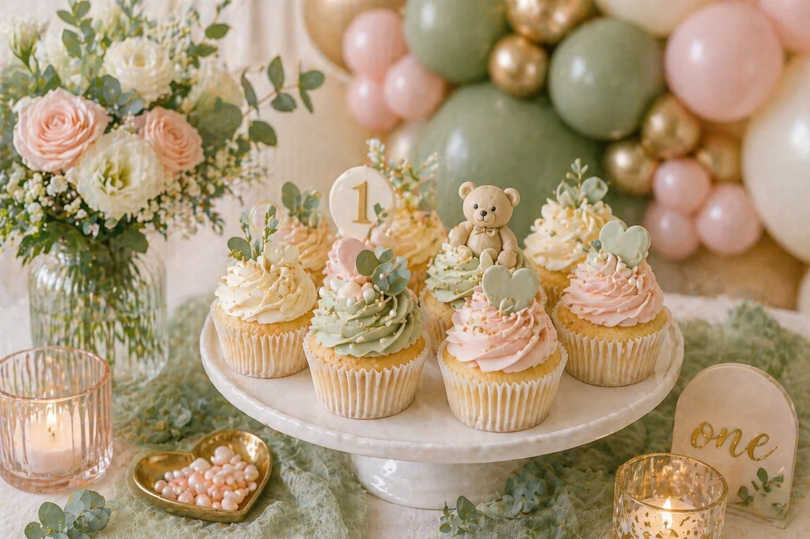

A beautiful party setup works best when everything feels connected. Balloons, cupcakes, cake stands, table decor, backdrops and colour details should all look like they belong together. When the dessert table coordinates with the balloon display, the whole celebration feels more styled and intentional — and it photographs beautifully.
At Little Moment Studio, our focus is balloon styling and celebration setups. We do not make cakes or cupcakes, but we know how important the dessert table is to the overall party look. This guide is designed to help you match cupcakes with your balloon display, whatever the occasion. If you would like cupcakes or a cake to match your setup, we are happy to recommend a trusted local cake maker.
Why Matching Cupcakes and Balloons Works So Well
Cupcakes are small, but they have a big visual impact on a party table. When the cupcake colours echo the balloon garland or backdrop, the whole display feels more considered. The aim is not to make everything identical — it is to repeat the same colours, textures and accents so the display feels connected.
| Element | Why It Matters |
|---|---|
| Balloons | Create height, colour and the main visual impact |
| Cupcakes | Add detail and bring the colour palette onto the table |
| Cake stand | Creates levels and makes the dessert table feel fuller |
| Backdrop | Frames the display for photos |
| Table decor | Adds texture, softness and finishing details |
Start with the Balloon Colour Palette
The easiest way to match cupcakes to balloons is to start with the balloon colours first. Most party setups work best with three to five colours. Once those are set, every cupcake decision — buttercream colour, sprinkles, fondant toppers — becomes straightforward.
| Party Style | Balloon Colours | Cupcake Colours |
|---|---|---|
| Baby shower | Ivory, sage, blush, champagne | Ivory buttercream, sage toppers, blush pearls |
| Birthday party | Pink, lilac, mint, white | Pastel swirls, rainbow sprinkles, number toppers |
| Halloween | Black, orange, purple, ivory | Mummy cupcakes, orange swirls, black bat toppers |
| Christmas | Green, white, gold, red | Tree swirls, snowflake rosettes, gold stars |
| Luxury party | Ivory, beige, champagne, gold | Neutral buttercream, pearl sprinkles, gold toppers |

Use One Main Colour and Two Accent Colours
A simple rule that keeps any display looking elegant rather than busy:
The Colour Rule
Example: Baby Shower
Main colour: Sage green — Accent colours: Ivory and champagne gold
- Ivory buttercream swirls
- Sage fondant toppers
- Gold pearl sprinkles
- Baby feet fondant decorations
This coordinates beautifully with a sage, ivory and champagne balloon display.
Example: Birthday Party
Main colour: Pink — Accent colours: Lilac and white
- Pink buttercream swirls
- White sugar pearls
- Lilac number toppers
- Pastel confetti sprinkles
This works well with a soft pastel birthday balloon garland.
Match the Cupcake Style to the Party Theme
Colour matters, but style matters too. A baby shower cupcake should feel soft and delicate. A Halloween cupcake can be more playful. A Christmas cupcake can feel festive and sparkly. Choosing the cupcake designs after choosing the balloon display means the cupcakes support the overall style rather than pulling in a different direction.
| Party Theme | Cupcake Style |
|---|---|
| Baby shower | Soft, pastel, pearl details, baby feet toppers |
| Birthday | Confetti, number toppers, colourful swirls |
| First birthday | Soft pastels, teddy bears, stars, clouds |
| Halloween | Mummy cupcakes, bat toppers, orange swirls |
| Christmas | Tree swirls, snowflakes, gold stars |
| Luxury party | Ivory rosettes, gold accents, pearl sprinkles |
Match the Finish: Matte, Pearl, Metallic or Sparkle
Balloons come in different finishes, and cupcakes can echo those finishes to create a more complete look. A small change — like swapping bright yellow for champagne gold — can make the whole table feel more premium.
| Balloon Finish | Cupcake Detail to Match |
|---|---|
| Matte balloons | Soft buttercream, fondant toppers, muted colours |
| Pearl balloons | Sugar pearls, pearl sprinkles, ivory buttercream |
| Metallic balloons | Gold stars, silver pearls, edible glitter |
| Chrome balloons | Bold fondant toppers, shimmer dust, metallic sprinkles |
| Pastel balloons | Pastel buttercream, soft confetti, baby-themed toppers |
Finish Tip
If your balloon display includes champagne gold balloons, use small gold pearl sprinkles on the cupcakes rather than bright yellow or orange sprinkles. The tonal match is what creates the premium feel.
Use Cupcakes to Repeat Balloon Colours
Cupcakes offer many ways to carry the balloon palette across the table. You do not need every cupcake to use every colour — it often looks better when the colours are spread across the whole box.
- Buttercream colour
- Cupcake cases
- Fondant toppers
- Sprinkles and edible pearls
- Cake stand ribbons
- Mini flags or personalised plaques
- Number toppers
- Star, heart, cloud or baby feet decorations
For example, in a box of 12:
| Quantity | Cupcake Style |
|---|---|
| 4 | Ivory buttercream swirls |
| 4 | Sage fondant toppers |
| 4 | Blush rosettes with gold pearls |
Together, the box covers the full palette without each cupcake feeling overloaded.

Baby Shower Cupcakes and Balloon Displays
Baby showers are one of the easiest events to coordinate beautifully. The palette tends to be soft and consistent, and there is a lot of flexibility in how the colours are combined.
| Balloon Palette | Cupcake Idea |
|---|---|
| Sage, ivory and gold | Sage toppers, ivory swirls, gold pearls |
| Blush, ivory and champagne | Pink rosettes, baby feet toppers, pearl sprinkles |
| Baby blue, white and silver | Blue swirls, white clouds, silver pearls |
| Beige, ivory and soft brown | Neutral fondant toppers, teddy bear details |
| Peach, cream and gold | Peach buttercream, gold sprinkles, soft floral details |
For more baby shower styling inspiration, see our guides to baby shower balloon ideas and baby shower cupcake ideas. For fondant topper ideas and more dessert table inspiration, see our guide to fondant cupcake ideas for baby showers and birthdays.
Birthday Cupcakes and Balloon Displays
Birthday parties can be bright and playful or soft and elegant — the coordination principle works for both.
| Balloon Palette | Cupcake Idea |
|---|---|
| Rainbow colours | Confetti cupcakes, rainbow sprinkles |
| Pink, lilac and mint | Pastel swirls, number toppers |
| Blue, green and silver | Blue rosettes, star toppers, silver pearls |
| Ivory, blush and gold | Gold number toppers, pearl details |
| Beige, white and sage | Neutral birthday cupcakes, soft sprinkles |
Number topper cupcakes are especially effective because they can echo number balloons, age signs or personalised backdrops — everything in the display reinforces the same moment.
For birthday styling ideas, see our guides to birthday balloons in Kent and first birthday balloon ideas.
Seasonal Cupcakes and Balloon Displays
Seasonal events are perfect for a fully coordinated dessert table because the theme does the heavy lifting.
Halloween
A Halloween balloon display might use black, orange, purple and ivory. Cupcakes could include mummy cupcakes with edible eyes, orange buttercream swirls, black bat toppers and purple spider web designs. For Halloween cupcake designs, see our guide to Halloween cupcake ideas.
Christmas
A Christmas balloon display might use green, gold, white and red. Cupcakes could include Christmas tree swirl cupcakes, snowflake rosette cupcakes, gold star toppers and pearl sprinkles. For Christmas cupcake designs, see our guide to Christmas cupcake ideas.
Easter
An Easter balloon display might use pastel pink, yellow, mint, lilac and white. Cupcakes could include mini egg nest cupcakes, bunny ear cupcakes, pastel buttercream swirls and floral spring toppers. For Easter balloon styling inspiration, see our guide to Easter balloon ideas.
4th of July
An American-themed display uses red, white and blue throughout. Cupcakes could include bold buttercream swirls and navy rosettes with white star toppers — the same palette carried from balloons straight onto the table. For cupcake designs, see our guide to 4th of July cupcake ideas.
Match the Cupcake Cases Too
Cupcake cases are easy to overlook, but they are visible on the table and make a real difference to how polished the overall display looks.
| Party Style | Best Cupcake Cases |
|---|---|
| Luxury baby shower | Ivory, champagne, gold foil |
| Children's birthday | Bright colours or rainbow cases |
| Halloween | Black, orange, purple |
| Christmas | Gold, green, red or white |
| Neutral party | White, kraft, beige or soft sage |
If the cupcake cases clash with the balloon display, the table can feel less considered. Neutral cases are usually the safest option when the cupcakes themselves are very colourful.
Use Cake Stands to Connect the Display
Cake stands help cupcakes look like part of the styling rather than food that has simply been placed on a table. Good options include white or ivory stands, gold stands, clear acrylic risers, wooden boards for rustic themes, tiered cupcake stands, small plinths and trays with matching ribbon.
| Party Theme | Stand Style |
|---|---|
| Baby shower | White or ivory — soft and elegant |
| Birthday | Bright or pastel stand — fun and colourful |
| Christmas | Gold or white — festive and refined |
| Halloween | Black stands or dark trays — creates contrast |
| Luxury party | Gold or acrylic — premium finish |
Practical Considerations
A beautiful setup still needs to work in real life. A few things worth thinking about before the day:
- How long the cupcakes will be on the table — buttercream softens over time in a warm room
- Whether the room is warm and whether taller cupcake designs will hold their shape
- Whether delicate fondant toppers are secure before transport
- Whether children will be reaching across the table
- Whether balloons are near candles or heat sources
For taller piped cupcakes, check that the cupcake box has enough height clearance. For delicate fondant toppers, it is often better to add them after transport rather than risk damage on the journey.
Styling Tips for a Coordinated Display
Limit the palette. A display with too many colours can look busy and unintentional. Choose three to five colours and repeat them carefully across every element.
Avoid exact colour matching. A soft tonal variation looks more natural than a precise match. Champagne gold on the cupcakes with gold balloons nearby looks considered — bright yellow sprinkles against gold balloons looks like a mistake.
Do not forget the cupcake cases. They are part of the visual design. Choose colours that complement the display or stay neutral.
Keep each cupcake simple. Too many sprinkles, toppers and colours on one cupcake can make the whole box look cluttered. A few well-placed details usually look more refined.
Think about the table as a whole. The cupcakes should work with the balloons, backdrop, cake stand and table decor — not just with each other.
A Simple Formula for a Coordinated Party Table
The Complete Formula
Baby Shower Example
- Sage, ivory and gold balloon garland
- Ivory cupcakes with sage baby feet toppers
- White cake stand
- Gold pearl sprinkles
- Soft table linen
- Teddy bear or wooden baby blocks
Birthday Example
- Pink, lilac and mint balloon garland
- Confetti swirl cupcakes
- Number topper rosette cupcakes
- Pastel cake stand
- Matching table confetti
- Personalised backdrop
Christmas Example
- Green, white and gold balloons
- Christmas tree swirl cupcakes
- Snowflake rosette cupcakes
- Gold baubles and pine branches
- Warm fairy lights
Working with a Local Cake Maker
Little Moment Studio does not make cakes or cupcakes, but we know they can be an important part of a beautiful party setup. If you would like cupcakes or a cake to match your balloon display, we can recommend a trusted local cake maker. This helps you create a more complete and coordinated celebration without having to source every detail separately.
A cake maker can usually match buttercream colours, fondant toppers, cupcake cases, sprinkles, theme details and cake stand style. The earlier the cake maker knows your colour palette, the easier it is to create something that truly coordinates with the balloons and table styling.
Our Recommendation
When you book a balloon display with Little Moment Studio, we are happy to share your colour palette with our trusted cake maker contact so both elements are designed together from the start.
Your Questions Answered
How do I match cupcakes to my balloon display?
Start with the balloon colour palette first, then repeat those same colours in the cupcakes through buttercream, fondant toppers, sprinkles and cases. Use one main colour and two accent colours for a clean, coordinated result.
Should the cupcake colours match the balloons exactly?
No — a soft tonal variation often looks more polished than a precise match. Champagne gold pearl sprinkles alongside gold balloons looks considered; bright yellow sprinkles alongside gold balloons looks like a mismatch. Echo the tone, not the exact shade.
What is the easiest way to coordinate a dessert table?
Set a clear colour palette of three to five colours, then apply it consistently across every element: balloons, cupcakes, cake stand, table linen and backdrop. Once the palette is set, every other decision follows naturally.
What cupcake decorations match metallic balloons?
For metallic balloons, use edible glitter, gold or silver star sprinkles, shimmer dust on fondant toppers, or metallic cupcake cases. The key is to echo the high-shine quality of the balloon finish in the cupcake decorations.
Do cupcake cases make a difference to the overall look?
Yes. Cupcake cases are a visible part of the table display. Cases that clash with the balloon display can undermine an otherwise well-coordinated setup. Choose neutral cases, or cases that match the palette, and the whole table will look more intentional.
Matching cupcakes with your balloon display is one of the easiest ways to make a party feel more polished and complete. The cupcakes do not need to be complicated — they simply need to repeat the colours and styling details from the rest of the setup. A clear palette, coordinated decorations and a well-chosen cake stand can transform a table into a display that feels genuinely designed.
For more cupcake inspiration, see our guides to baby shower cupcake ideas, Halloween cupcake ideas, Christmas cupcake ideas and fondant cupcake ideas for baby showers and birthdays.
Planning a Celebration in Sittingbourne or Kent?
Little Moment Studio creates coordinated balloon displays, backdrops and party setups for baby showers, birthdays and events across Kent. We can also recommend a trusted local cake maker to complete your dessert table.